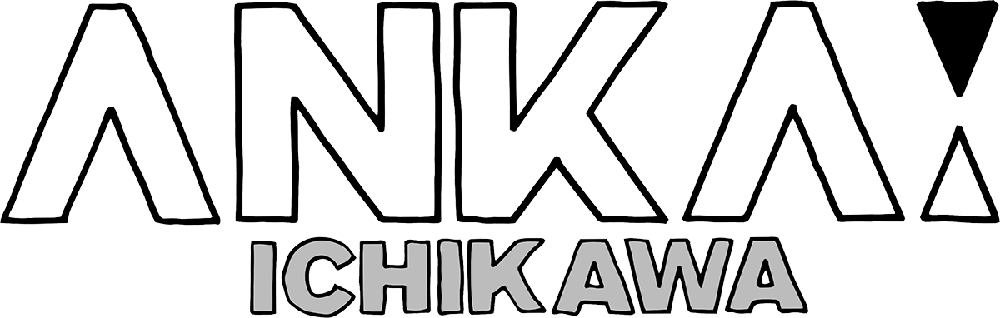

〒272-0826
千葉県 市川市真間2-16-12
市川駅から徒歩13分／
市川真間駅から徒歩7分
TEL：047-321-6670／
FAX：047-321-6680／
MAIL：info@anka-ichikawa.com

アンカー市川とは
みんなで作る
自分の居場所
アンカー市川は、市川手児奈通りと、真間大門会通りが交わる角地にある3階建ての建物をリノベーションし、「みんなで作る自分の居場所」というコンセプトもと、2019年6月にオープンしました。
ゲストハウス、シェアスペース、みんなのキッチンが併設されたこの施設では、地域の人々同士の交流や外から来た宿泊客と地域の人との交流が生まれるきっかけとなるイベントを開催しています。
地域のみなさんが「何かを始めたい」「新しいことに挑戦したい」と考えたとき、その想いをサポートできるような、そんな場所を目指しています。この場所が「地域のアンカー=拠り所」になれたらと考えています。
共有スペースは無料で利用いただけます。まずはお気軽にアンカー市川に立ち寄ってみてください。
アンカー（ANKAː）とは
アンカーという名前は錨(いかり)を意味する英語：anchorから取りました。錨はしっかりと船をその場所に固定させるためのものですが、英語では比喩的に「拠り所」という意味としても使われます。
このアンカーという場所が地域の人々の心の支え、拠り所となるようにという願いが込められています。
アンカーサイドパーク
アンカーサイドパークは2019年末にクラウドファンディングを利用して生まれた緑のヴォイドです。
移動販売をしている方に出店してもらうことで商店街の新しい形をつくるきっかけになるような、また餅つき大会やマルシェなど屋外のイベントを行えるような、そんなスペースを目指しています。